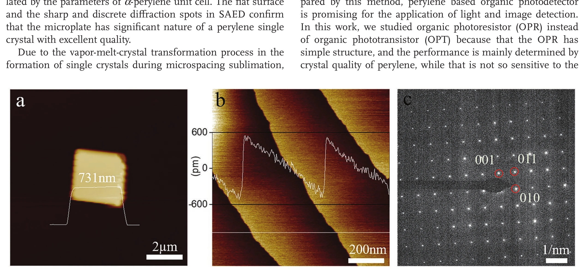
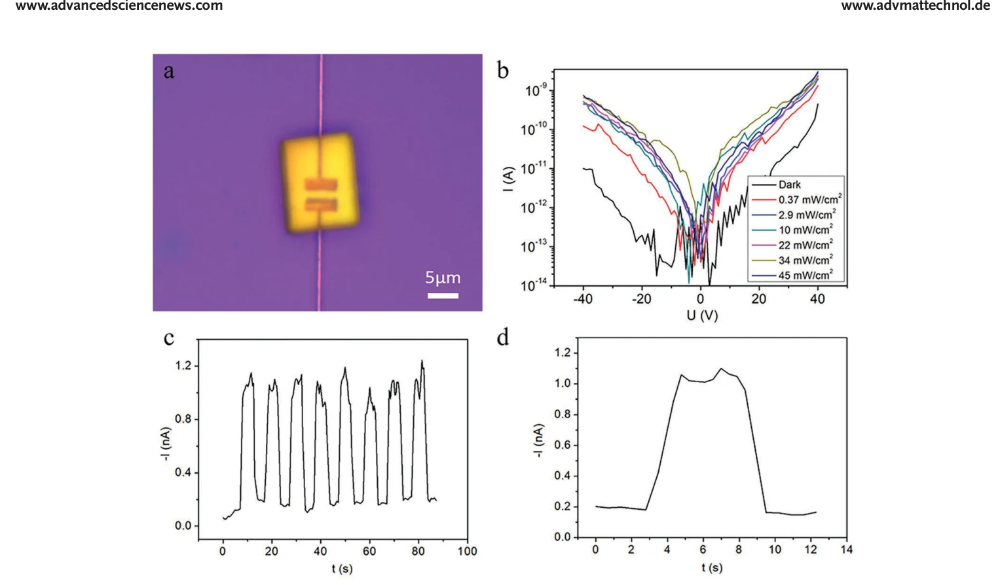
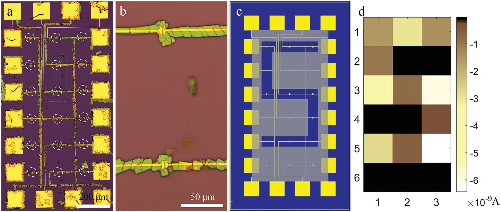

有机单微晶的可寻址光感知阵列
该研究提出一种兼容光刻电极的有机单微晶自对准方法：有机半导体分子在升华生长时选择性落到预制沟道区域，直接形成高分辨率光探测像素。最终实现 1.7 K PPI 的微晶阵列和 3 × 6 独立寻址器件，并读取出字母“S”的空间光图案。
1.7 K PPI阵列像素密度
6 × 10 μm²单像素器件尺寸
3 × 6可寻址探测阵列
让微晶只在预制电极沟道处成核
常规有机单晶需要先独立生长、再人工转移到电极，不利于大规模阵列。论文采用与光刻兼容的图形化电极和升华生长策略，利用局部表面能、几何限域与分子沉积条件，引导单微晶直接跨接源漏电极。生长与器件定位一步完成，减少转移造成的污染、破损和像素错位。
以连续晶格获得稳定的光电输运通道
单微晶内部缺少多晶薄膜中大量随机晶界，载流子可沿连续晶格输运，有利于降低像素差异并提高光响应稳定性。每个器件尺寸约 6 × 10 μm²，在保持微型化的同时，微晶能够完整覆盖沟道并与源漏电极形成有效接触，这是高像素密度和可重复读出的材料基础。

行列电极把单个微晶变成可读取像素
研究进一步设计行列互连和读出电极，构建 3 × 6 独立寻址光探测阵列。通过选择对应行列，可逐个读取目标像素的暗态与光照电流，避免相邻器件信号混叠。阵列像素密度达到约 1.7 K PPI，说明有机单晶器件也能够从单个样品走向高分辨率集成。

把字母“S”的空间光分布转换为电流矩阵
实验将字母“S”形光图案投射到阵列，依次读取 18 个像素的响应并重建二维电流分布。被照亮像素与暗态像素形成清晰差异，从而恢复输入图案。该结果证明自对准微晶阵列不仅结构上可集成，也具备实际空间光信号采集能力。

论文来源
Ultrahigh Resolution Photodetector Arrays of Organic Single Microcrystals Self-Aligned on Prepatterned Electrodes
Zhenyu Fang, Hong Wang, Junfeng Liang, Zhifang Wang, Wenchong Wang, Feng Huang
Advanced Materials Technologies 7 (2022), 2101457
DOI：10.1002/admt.202101457
AMBIC Laboratory
SUN YAT-SEN UNIVERSITY